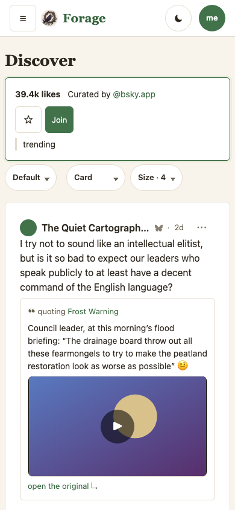
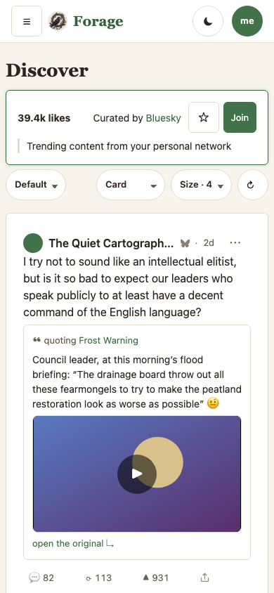
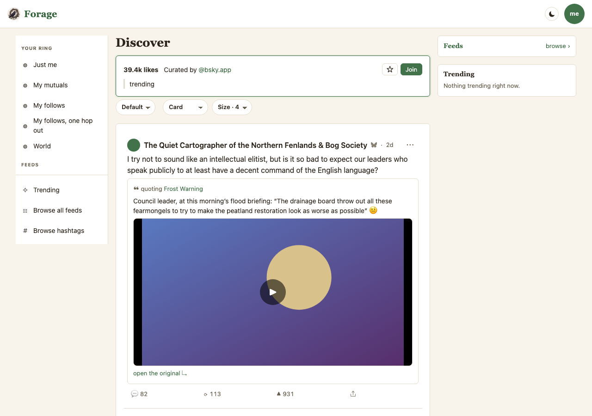
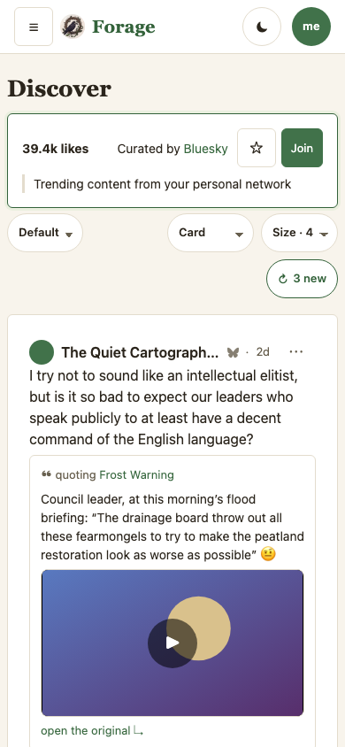
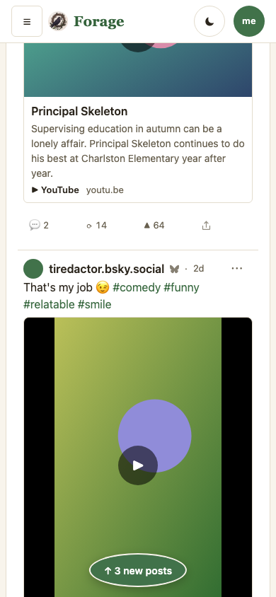
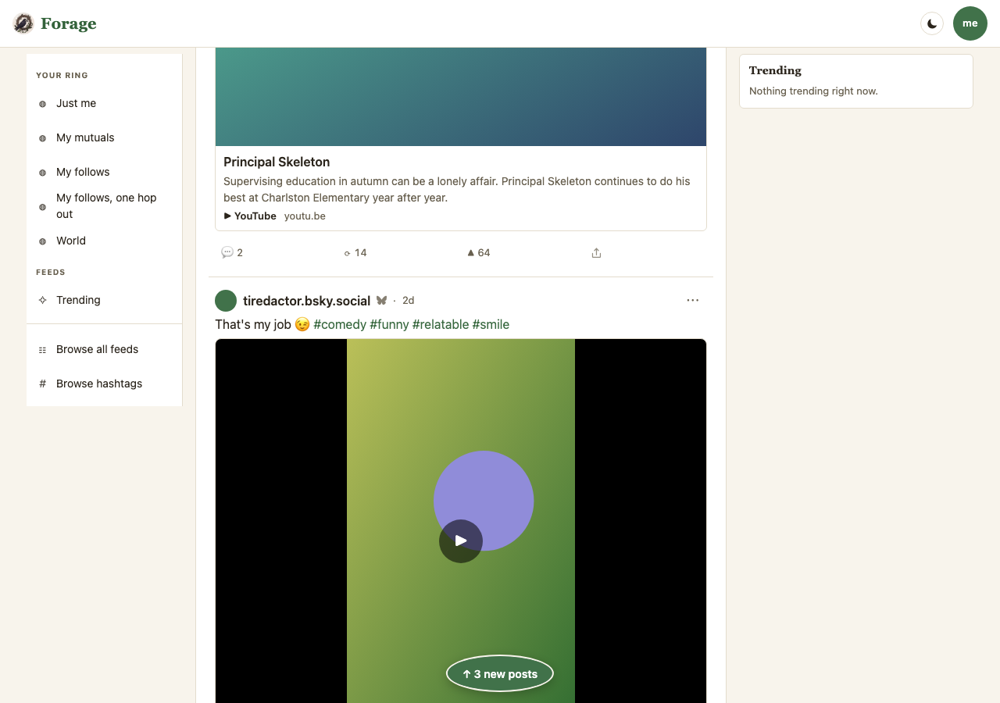

One proposal in six decisions, from the owner 2026-09-01:
“let's put a refresh indicator and button to refresh on the top of the post feed stack,
on the same horizontal line as the sort control bar, right aligned over the feed column.”
It is Phase 5 of plans/2026-09-01-plan-feed-position-and-updates.md — the half of
“come back to your place in the feed” that answers then how does the feed actually update.
It is deliberately independent of that plan's Phases 0–4: the count needs only
“is there anything newer than the post you are holding”, not the restore machinery, so it
ships and is judged on its own.
Every frame here is a capture of the engine (MOCKS.md P1): Current is
main at 71f66f0, Proposed is claude/feed-position at
09daed3, both by scripts/mock-snaps.mjs, in the default skin (rule 4),
at 390×844 and 1280×900. Captures live in plans/mocks/snaps/feed-refresh/.
The population is e2e/harness/mock-refresh.mjs: mock-board's load — the
64-grapheme chosen name, four-digit counts, a video stage — plus the one thing that board
cannot express, the feed changing between two reads of the same URL. Three posts arrive,
not one and not a round ten.
Two frames on this page are the reason it exists. The first capture found two defects that review had not, and both are fixed in the pixels below. At 390 the count state pushes the bar to two rows and the control landed at the left of row two — the opposite of what was asked for; the at-rest frame fits one row and could never have shown it. And the pill's brand green sat on the fixture's green video frame and all but vanished. MOCKS.md P2: a frame is judged under the load the surface carries.
All five taken on the v1/v2 frames (“great, let's complete and land this”). Each row names the frame it was taken on and the claim that now holds it.
| # | Decision | What it does | Rejected | Held by |
|---|---|---|---|---|
| 1 | The control bar spans the feed column (5a — the prerequisite nobody asked for) | The bar was a shrink-wrapping flex item: 295px inside a 680px column, with its .grow
spacer measuring 0. So nothing in it was right-aligned and there was nowhere to put a
right-aligned control. flex: 1 is the whole fix. It moves two controls you already
approved: the density and card-size dials travel 385px to the column's right edge. |
Absolute-positioning the refresh control over a bar that still shrink-wraps (the dials would have stayed huddled left and the bar would have read as broken) | mock-refresh R1 — the bar's right edge meets the feed card's, both frames |
| 2 | One control with three states, not an indicator beside a button | ↻ at rest · ↻ 3 new when three arrived · spinning while it fetches.
The count is also in a live region, so a reader who is not looking at the bar hears it.
Today the press is the only thing that looks — nothing checks in the background yet, so a
deep reader presses once to look and once to take. That is decision 4's consequence, not a slip: while
you are mid-feed there is no press-free way to add posts without moving you. When the check should run
on its own is the first open question below. |
A separate count and button: a count with nothing to press is a dead end, and a button that cannot say whether pressing it will do anything makes you press it to find out | mock-refresh R4 (rest carries no count), R5 (the count is the number that arrived),
R7 (announced in a live region) |
| 3 | Outboard of the display dials — last in the bar, at the column's right edge | Refresh acts on content where density and card size act on presentation, and the outermost slot is the one a thumb reaches. Right-aligned on whatever row it lands on, which at 390 with a count is the second row. | Inboard of the dials, keeping the display controls together as one family (proposed first, and the weaker read: it puts a content control inside a presentation cluster) | mock-refresh R2 (last, and after density), R3 (≥44px at 390),
R9 (right-aligned with a count showing — the defect the first capture found) |
| 5 | The count follows the reader down as a pill (v2 — D14, settled by the owner on the v1 frames: “let's complete and land this”) | The chosen line scrolls away: the bar is position: static and its bottom leaves the
viewport at scrollY 256 (desktop) / 274 (phone), under one screen — and a reader restored to
4270px on a phone is fifteen screens past it, which is exactly the case this control exists for. So a
pending count follows as a pill above the board, and only while the bar is off-screen
and there is something to say. It stands down the moment the bar is back in view: one voice at
a time, and none at all when there is nothing to report. |
(a) a sticky bar — always visible, but 56px on top of the masthead's 61 is 14% of an 844px phone given permanently to chrome that is idle almost always; (c) accept the limit and let the control be an arrival-only affordance, which abandons the reader this feature is for | mock-refresh R8 — both frames: no pill while there is nothing to report, the pill in
view and ≥44px once there is, and it stands down when the bar returns |
| 6 | It checks on RETURN to a board (v5 — owner 2026-09-02, choosing among the three candidates: “on return to board”) | Coming back to a board you were reading — Back out of a post, or a walk back to it later — checks page one and says what arrived, with no press. That is the moment “what did I miss” has an answer. Before this the press was the only thing that looked, so the indicator half of the control never lit on its own and a reader deep in a board pressed twice. | A timer while you read (asks the network on a cadence nobody chose); the tab becoming visible
(real, but a weaker signal than arriving at the board itself); checking on every MOUNT — which is
not the same thing, since render() re-runs on every store change |
mock-refresh R10 (the return finds it with no press, injects nothing, moves nobody),
R11 (a store re-render is not a return); feed-position P2b (exactly one extra request) |
| 4 | It never injects — announcing is automatic, taking them is the press | The check counts what sits above the post you are holding and says so. The board does not move, the row count does not change, and your scroll offset does not change. Pressing prepends the posts and takes you to the top of them. | Prepending silently on a timer — the thing that makes you lose your place mid-sentence, and the behaviour Twitter and Instagram both shipped and then withdrew after complaints | mock-refresh R5 (rows and offset both hold still), R6 (the press prepends and goes to
top). Proved by mutation: making the check inject kills R5. |
D14 closed in v2; the check's trigger closed in v5 (decision 6 above) — the pill is decision 5 above, not an open question. What remains open is everything below, and none of it blocks this landing.
Current is the bar as it ships today: Sort, then the two dials pressed up against it, then
385px of nothing to the right on desktop. Proposed spans the column, which puts the dials where they have
always looked like they belong and leaves the outermost slot for refresh. At rest the control is a quiet
↻ and carries no number — there is nothing to report and it says so by saying nothing.



The control is now ↻ 3 new in brand ink. Nothing else on the screen has
changed — the same first post, the same row count, the same scroll offset. That is the decision, not
an accident of the capture: the board holds still until you ask it not to.
the defect this frame found At 390 the count pushes the bar to a second row, and in the
first capture the control came down at its left. The pixels below are the fix, and R9 now measures it.

There is no Current frame for this state, and that is the honest thing rather than a gap:
main has no control to put in one. The capture script checks for the seam and skips these two
routes on a tree that lacks it rather than faking a frame — MOCKS.md P1, a Proposed frame is the engine
or it is nothing.
Scrolled to 1200px, the bar is gone. The count follows as a pill above the board, and standing
on the fixture's video is the frame worth looking at: the first capture's pill was brand green on a green
clip and all but disappeared, so it now carries a ring in the page's own ground. Scroll back up to the bar
and the pill stands down — one voice at a time, and none at all when there is nothing to say.
It is an IntersectionObserver on the control rather than a scroll listener: it reports the state
we care about (is the control on screen) instead of a number we would have to convert into that state.


js/ui/refresh-control.js — the control, its three states, the live region and the pill.js/ui/lens-views.js — boardToolbar takes it as an outboard extra;
feedBoardView owns checkForNew and the pending list.css/app.css — .sortbar { flex: 1 } (decision 1),
.pillbtn / .refresh / .newspill.e2e/harness/mock-refresh.mjs — the population; e2e/harness/shim.mjs gained
sequenced fixtures, the only way to say a feed changed between two reads of one URL. They advance
on an explicit __shimAdvance() and not on a request count, which was the first design and was
wrong: the board mounts three times on arrival (the plan's Phase 0), so a count-based sequence had
run to its end before the test could say “now the world changes”.e2e/mock-refresh.workflow.mjs — nine claims (R1–R9), in the gate.
R1 was red first at the measured 545-vs-930. Three mutations of the shipped code, three reds:
injecting instead of announcing (R5), moving refresh inboard of the dials (R2), and dropping the
wrapped-row alignment (R9).This branch was rebased twice while it was open, so the v1–v3 commits named below are their post-rebase identities — the pre-rebase ones are unreachable and would not resolve for a reader. Rule 1 wants a commit per revision that a reader can actually check out, not the one that happened to exist on the day.
| v | When | Commit | What changed |
|---|---|---|---|
| 5 | 2026-09-02 | __PROPOSAL__ | The check now runs on return to a
board (owner's pick of the three candidates), promoted from open question to decision 6. Frames
re-captured against a main that has since gained the feed-position work (#50) — the
board paints from a record now, so its Current column is a different engine even though the pixels
are the same. |
| 4 | 2026-09-01 | 09daed3 | Both columns re-captured against the
signed-out-board landing (#47), which reworked this very surface: js/ui/sortbar.js gained
per-board timeframes, the rail lost its Feeds card, Trending moved into the nav, and the curator is now
named rather than handled. Every frame changed — unlike v3, where the re-capture came back
byte-identical. The refresh control is unaffected and still ends at the column's right edge, which is the
thing this version exists to show. boardToolbar took refresh into the options
object that landing introduced, rather than adding a third positional argument. |
| 3 | 2026-09-01 | 09daed3 | Both columns re-captured. Two other
features landed on main while this branch was open (reply embeds #48, thread guides #49), so the
branch was rebased and every sha moved. v2's mock-baseline named a tree that was no longer what
the owner runs and its mock-proposal named a pre-rebase commit on no branch. Nothing in the
design changed and no frame looks different — but a sha that does not name a live tree is exactly the
drift rule 2 exists to prevent, so the pixels were taken again rather than the metas edited to fit. |
| 2 | 2026-09-01 | c3b9206 | D14 settled by the owner on the v1
frames and promoted from an open question to decision 5; § C retitled. No frame changed —
mock-proposal still named the tree the pixels came from.
MOCKS.md P3: a decision that settles goes back into the mock in the same landing. |
| 1 | 2026-09-01 | 4888e5b | First publication. Four decisions, eight captures.
The Proposed frames were re-captured once before publishing: the first set showed the control wrapping to the
left at 390 and the pill vanishing on a green video, both fixed in 4888e5b and now held by R9 and
a ring respectively. |